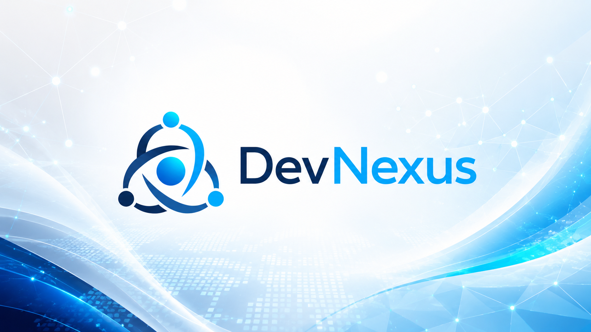
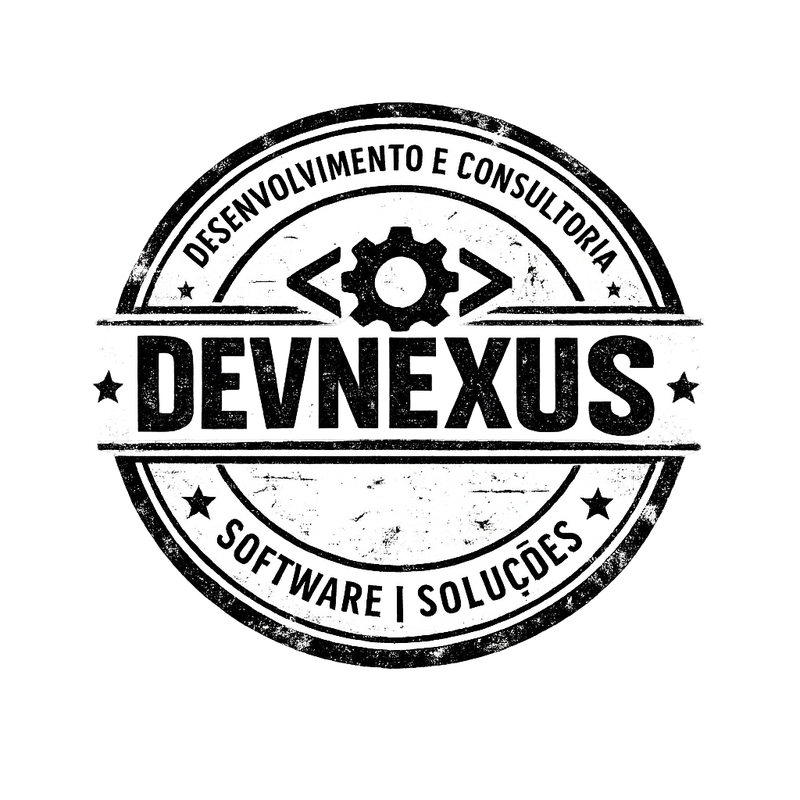

Educação
Sistemas de gestão escolar, inventário TIC, dados educacionais, conectividade, SIGE e capacidade operacional.
A DevNexus Digital apoia governos, instituições públicas e projectos na concepção, estruturação e implementação de soluções digitais para educação, saúde, eleições e administração pública.

A DevNexus Digital trabalha na ligação entre estratégia, processos, dados, sistemas e capacidade institucional. O nosso foco é ajudar organizações públicas e projectos de desenvolvimento a desenhar soluções digitais que resistem ao uso real.
A tecnologia entra como instrumento. A base é sempre institucional: clareza de mandato, processos bem definidos, dados governados, responsabilidades assumidas e equipas capacitadas.
Transformação digital aplicada a sectores onde confiança, continuidade e rigor fazem diferença.
Sistemas de gestão escolar, inventário TIC, dados educacionais, conectividade, SIGE e capacidade operacional.
Digitalização de processos, informação clínica e administrativa, interoperabilidade e apoio à decisão.
Gestão de dados eleitorais, integridade, rastreabilidade, segurança e transparência operacional.
Modernização administrativa, serviços digitais, arquitectura empresarial e reorganização de processos.
Trabalho técnico, institucional e pragmático. Sem apresentações bonitas que depois ninguém consegue executar.
Estratégias, modelos de governação, roteiros, planos de acção e organização institucional da transformação digital.
Levantamento de processos, sistemas, dados, infraestruturas, riscos, maturidade digital e prioridades reais.
Termos de referência, requisitos funcionais, modelos de dados, interoperabilidade, perfis e critérios de aceitação.
Formação, manuais, gestão da mudança, acompanhamento técnico e reforço da sustentabilidade institucional.
Gráficos animados para comunicar foco estratégico e maturidade de intervenção.
Estratégia, processos, dados e tecnologia alinhados.
A DevNexus Digital posiciona-se como parceira técnica para transformar necessidades institucionais em soluções digitais robustas, governáveis e sustentáveis.

Conte-nos o desafio: sector, instituição, sistema, processo ou problema de governação. A DevNexus Digital ajuda a transformar confusão inicial num caminho de execução.